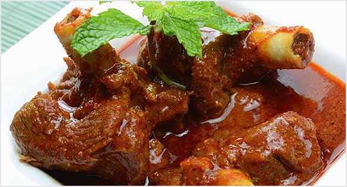

Mutton Curry

Description
Mutton curry (also referred to as kosha mangsho,lamb curry, or goat curry) is a dish that is prepared
from goat meat (or sometimes lamb meat) and vegetables. The dish is found in different variations across all
states, countries and regions of South Asia and the Caribbean.
Mutton curry was originally prepared putting all the ingredients together in a earthen pot and slow cooking the
whole curry by wood fire on a clay oven. Today it is cooked using pressure cookers and slow cookers after briefly
sautéing all the ingredients and spices in a big wok. The steadily cooked mutton becomes more tender than
normally cooked mutton. Mutton curry is generally served with rice or with Indian breads, such as naan or
parotta. The dish can also be served with ragi, a cereal.
Ingredients
- 2-3 tbsp Oil, तेल
- 2 tbsp Ghee, घी
- 2 Black cardamom, बड़ी इलायची
- 2-4 Cloves, लॉन्ग
- 8-10 Black peppercorns, काली मिर्च के दाने
- Prepared Ginger Garlic paste, अदरक लहसुन का पेस्ट
- 5 medium size Onion, chopped, प्याज
- Salt to taste, नमक स्वादअनुसार
- 1 ½ tbsp Coriander powder, धनिया पाउडर
- Marinated Mutton, मैरिनेटेड मटन
- 2-3 cups Water, पानी
- Prepared Onion Tomato Masala, तैयार किया हुआ प्याज टमाटर मसाला
Steps
- In a cooker, add oil, ghee once it’s hot, add black cardamom, cloves, black peppercorns and let it splutter
well.
- Add ginger garlic paste, onion and saute it well for 5 minutes.
- Add salt to taste and saute it until light brown in color. Add coriander powder and mix well.
- Add marinated mutton and mix it well. Add water and mix well.
- Cover it with a lid and cook on medium flame for 5-6 whistles.
- Let it cool at room temperature until pressure inside the cooker goes down naturally.
- Open the lid, add prepared onion tomato masala and mix it well.
- Just cover it with the lid without a whistle and cook on medium flame for 5-7 minutes .
- Transfer it into a serving bowl, garnish it with dry fenugreek leaves, ginger, coriander sprig.
- Serve hot with roti or steam rice.
Back to Home